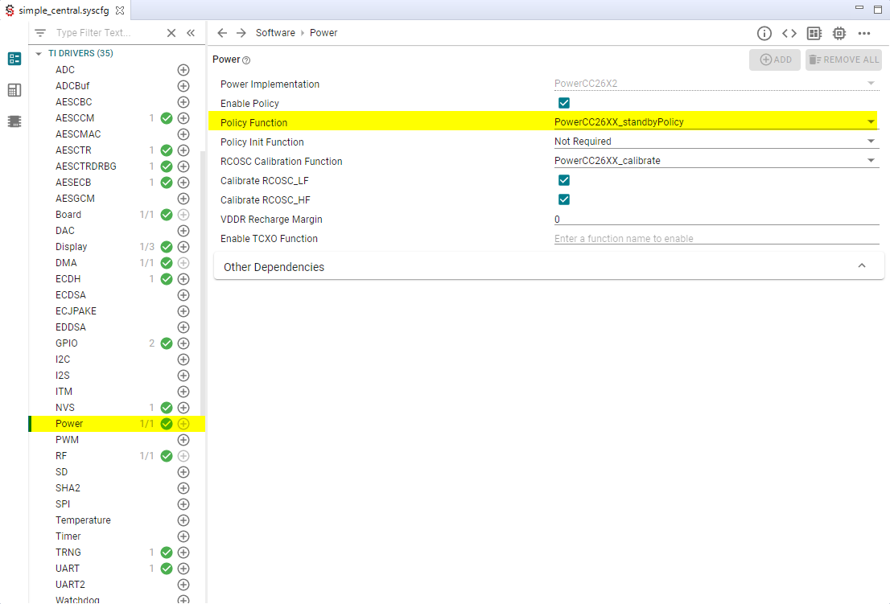

Power Management¶
All power-management functionality is handled by the TI power driver and are used by the peripheral drivers (e.g. UART, SPI, I2C, etc..). Applications can prevent, if they choose, the CC13xx or CC26xx from entering low power modes by setting a power constraint.
By default, all the examples in SimpleLink CC13xx/CC26xx SDK will put the CC13xx or CC26xx in standby mode if there is no task running.
This is achieved by configuring the TI power driver and the kernel to do so, as shown in the following step.
As configured via SysConfig, you can find the Idle functions defined inside
TI-RTOS→Core Kernel→Idle.By doing this, the TI-RTOS7 kernel will call Power_idleFunc whenever no task is running.
Power_idleFunctakes in policyFxn and policyFxn is defined using SysConfig tool Figure 19.. By default, TI sets thePowerCCxxxx_standbyPolicyas policyFxn.Power_idleFuncis defined in{SDK_INSTALL_DIR}\source\ti\drivers\power\PowerCCxxxx.candPowerCCxxxx_standbyPolicycan be found in{SDK_INSTALL_DIR}\kernel\tirtos7\packages\ti\dpl\PowerCCxxxx_tirtos.cFigure 19. Configure Power Policy for Idle Function.¶
In the SysConfig generated files, you will find the following example in
ti_drivers_config.c.const PowerCC26X2_Config PowerCC26X2_config = { .enablePolicy = true, .policyInitFxn = NULL, .policyFxn = PowerCC26XX_standbyPolicy, .calibrateFxn = PowerCC26XX_calibrate, .calibrateRCOSC_LF = true, .calibrateRCOSC_HF = true, .enableTCXOFxn = NULL };
More information on power-management functionality, see Power Management User’s Guide. These APIs are required only when using a custom driver.